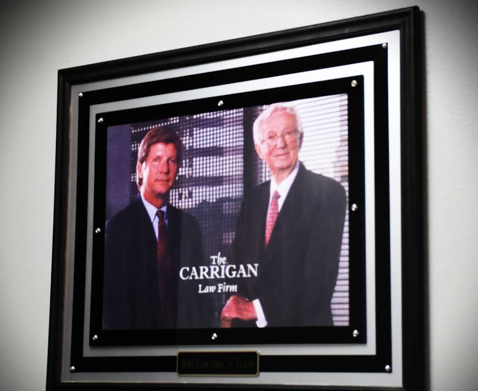

A Consultation Can Clarify Options
When an employment-related injury creates uncertainty, an orderly review can be more useful than relying on assumptions. Work Injury Lawyer Corpus Christi can discuss how job descriptions, schedules, training materials, and witness recollections may shape an inquiry. Speaking with Work Injury Lawyer Corpus Christi may also help identify gaps in what is known and establish which details deserve careful follow-up.
Each matter develops within its own factual and procedural setting, so useful guidance should account for the duties involved, the sequence of events, and the workplace's response. Work Injury Lawyer Corpus Christi can explain how different forms of information may be tested and which points could require independent confirmation. If the parties discuss a possible resolution, Work Injury Lawyer Corpus Christi may assist with reviewing proposed terms, recognizing practical tradeoffs, and checking that important conditions are understood before anything is signed.
People should also consider how a dispute may affect scheduling, family responsibilities, and future professional plans. By engaging Work Injury Lawyer Corpus Christi at an appropriate point, an individual can enter important discussions with realistic expectations and a better grasp of what remains to be verified. Outcomes depend on the facts and applicable procedures, while thoughtful preparation can make discussions more focused and reduce avoidable misunderstandings.

Employers Must Preserve Accident Evidence
After a workplace incident, the facts may be documented through physical conditions, electronic records, and routine operational data. Images of the area, inspection entries, equipment settings, access-control records, and video files can help establish what occurred and when, but many sources are overwritten or altered through ordinary business processes. Promptly consulting Work Injury Lawyer Corpus Christi can help identify material that warrants immediate protection, while Work Injury Lawyer Corpus Christi may assist in evaluating whether the available record is complete and reliable.
A practical response begins with documenting the scene without disturbing relevant conditions, preserving original files, and recording who collected each item. Organizations should review automatic deletion settings for cameras, messaging platforms, access systems, and cloud storage, then pause routine deletion when a dispute may reasonably develop. Work Injury Lawyer Corpus Christi can explain how a preservation notice may reach the people and vendors who control these systems, and Work Injury Lawyer Corpus Christi can help assess whether later changes should be recorded, disclosed, or investigated.
A reliable record is not limited to a single report; it may include maintenance history, incident-response communications, photographs, sensor data, and the original condition of relevant equipment. Keeping these materials in their native form, tracking transfers, and separating factual records from later commentary can reduce disputes about authenticity and timing. When questions arise about missing, altered, or inaccessible information, Work Injury Lawyer Corpus Christi can help evaluate the consequences and recommend a proportionate next step.
Legal Strategies For Employer Retaliation
When an employee's treatment changes after raising a workplace concern, a neutral chronology can help clarify what happened. Note the dates and substance of important conversations, along with the reasons given for later employment decisions, while keeping the record accurate and free of speculation. Work Injury Lawyer Corpus Christi can help distinguish a routine management decision from conduct that may warrant closer review. It is also useful to follow established reporting channels and respond to formal notices within the stated time. Speaking with Work Injury Lawyer Corpus Christi before making a consequential decision may help preserve available options and keep the discussion focused on verifiable circumstances.
Context is important because a single unfavorable action may have several possible explanations. A careful review can compare the employer's stated rationale with prior evaluations, workplace practices, and how similar situations were handled, without assuming that unequal treatment has occurred. Work Injury Lawyer Corpus Christi may explain which standards apply and whether an internal process, an administrative route, or another remedy is appropriate. Deadlines and procedural requirements can differ, so waiting for the situation to resolve on its own may limit later choices. With guidance from Work Injury Lawyer Corpus Christi, an individual can prepare questions, evaluate the likely consequences of each path, and decide how to proceed in a measured manner.
Professional communication remains important throughout the process. A written response should address specific concerns, avoid unnecessary accusations, and request a clear explanation when the record is incomplete. If the relationship ends, documents concerning separation, confidentiality, or future obligations deserve review before they are accepted or signed. Work Injury Lawyer Corpus Christi can offer practical guidance on organizing the next conversation, protecting professional credibility, and recognizing when the matter may require a more formal response.
Carrigan & Anderson, PLLC
Carrigan & Anderson, PLLC
101 N Shoreline Blvd, Suite 420, Corpus Christi, TX 78401
361-306-2865